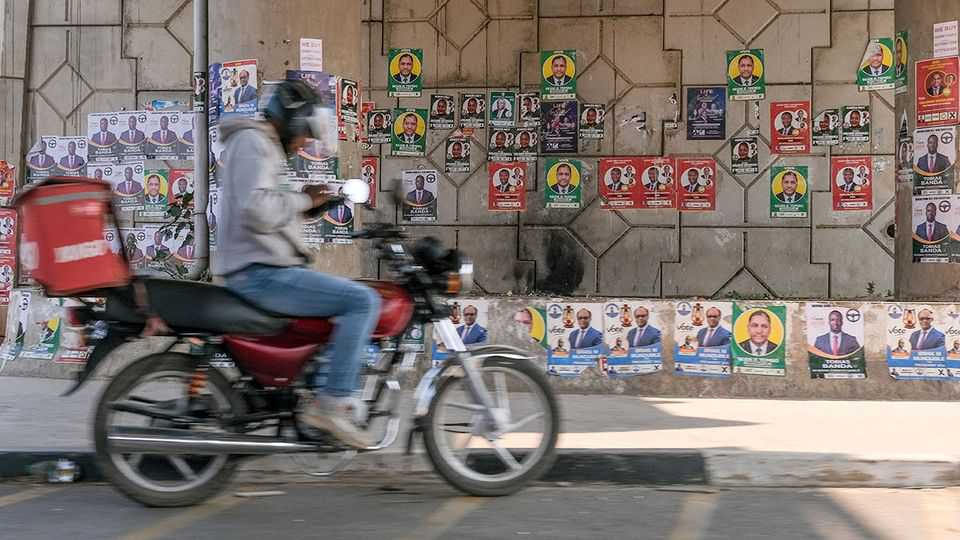
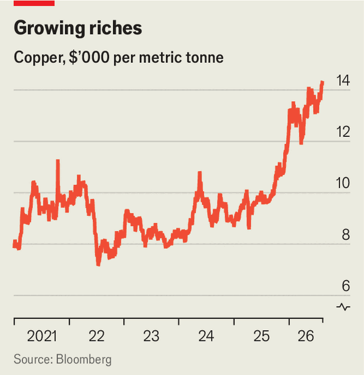

Zambia’s election is a test of metal
High copper prices are a boon. But voters want to feel it

Aug 13th 2026
In one way or another, everyone is working the earth outside Kitwe, in Zambia’s Copperbelt province. The local mine is back in business, boosted by record copper prices (see chart). But that means little to the women weeding their onions outside. “We don’t know where they take the money,” says one, gesturing at the mine gate. Historically, the rate at which growth translates into poverty reduction has been lower in Zambia than almost anywhere else in the world.
The cost of living will have been on voters’ minds when they voted for a president on August 13th. Many feel burdened by high prices, despite falling inflation and a stronger kwacha. Their frustration energised the campaign of Brian Mundubile, the main challenger, who describes himself as an elder brother to the disenchanted young. The incumbent, Hakainde Hichilema of the United Party for National Development (UPND), probably has enough support to win a second term (results are expected on August 17th). But he has also tilted the playing field in his favour, using tactics he once decried.

Mr Hichilema spent years in opposition, facing spurious charges of treason, before his triumph in 2021. One of Zambia’s richest businessmen, he presented himself as the man to fix an economic crisis. His government has restructured unpayable debts, cut subsidies, boosted reserves and kept the IMF happy. It has also reduced the tax bill of the copper industry, which accounts for two-thirds of exports. The reforms have “poised us for growth”, purrs Sokwani Chilembo, chief executive of the Zambia Chamber of Mines.
That growth is slower than the government promised. An ambitious production target of 3m tonnes a year by 2031 will surely be missed (last year’s output was about 890,000 tonnes). Not for want of buyers. China is revamping a railway to the Indian Ocean. Western countries are backing a transport corridor to the Atlantic. Zambia does not want to pick sides, and has rebuffed American attempts to link mineral access to health assistance. “Common sense is that you don’t put all your eggs in one basket,” says Situmbeko Musokotwane, the finance minister.
With copper in such demand, could more of the gains be kept in the country? Many Zambians think so. Some allege that Mr Hichilema is soft on foreign-owned mining companies because he is secretly funded by them (which his aides and the mining companies deny). He has abolished fees in state schools and allocated more money to local government, both highly popular moves, but still struggles to shake off his elitist image.
In other ways, he has had a makeover: the man who stood up for Zambian democracy from a jail cell is now weakening it from State House. Repression is not quite as thuggish as it was under the Patriotic Front (PF) government of the 2010s, when Zambia began its authoritarian slide. Gone are the cadres at markets and bus stations who used to shake down passers-by. Instead, citizens worry that a critical Facebook post could result in arrest under cyber-crime laws. “Institutions still act the way they acted under the PF,” says Josiah Kalala of Chapter One, a pressure group.
The PF itself did not field a candidate after struggling with internal divisions and state interference. Mr Mundubile, a former PF politician, galvanised old followers behind a new brand. On the campaign trail, he was obstructed by UPND supporters throwing stones; he says that some of his sympathisers were arrested. He draws much of his support from the north and east. Mr Hichilema draws his from the south and west. The main battleground is in the towns, where ethnic ties are weaker.
Zambian democracy has life in it yet, and a surprise is not impossible. Whoever wins will need to find answers to long-standing economic questions. Nearly two-thirds of Zambians live on less than $2.15 a day; only five countries have a higher poverty rate, and they are all either in conflict or have much less money to go round. After two years of good harvests, the return of El Niño now brings the threat of drought. The last time it happened, in 2024, low inflows at hydroelectric dams cut power to just a few hours a day. The task for the next president is to take the copper boom beyond the mine gates. ■
Sign up to the Analysing Africa, a weekly newsletter that keeps you in the loop about the world’s youngest—and least understood—continent.